Digital twin
A 3D digital twin of Vietnam's busiest port
See how a live 3D model built on ArcGIS helps run one of the busiest ports in Vietnam.
Learn more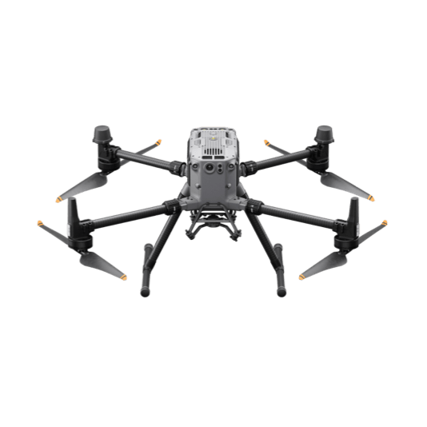
DJI EnterpriseDrones · LiDAR · Dock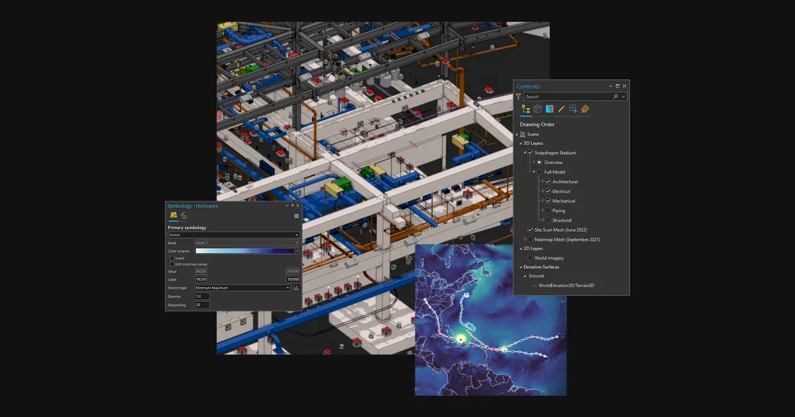
Esri ArcGISGIS & SDI Spectra GeospatialGNSS & Robotic Stations
Spectra GeospatialGNSS & Robotic Stations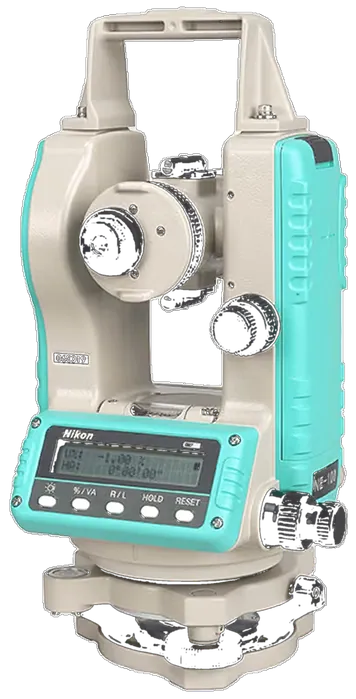
Nikon PrecisionOptical Survey US RadarGround Penetrating Radar
US RadarGround Penetrating Radar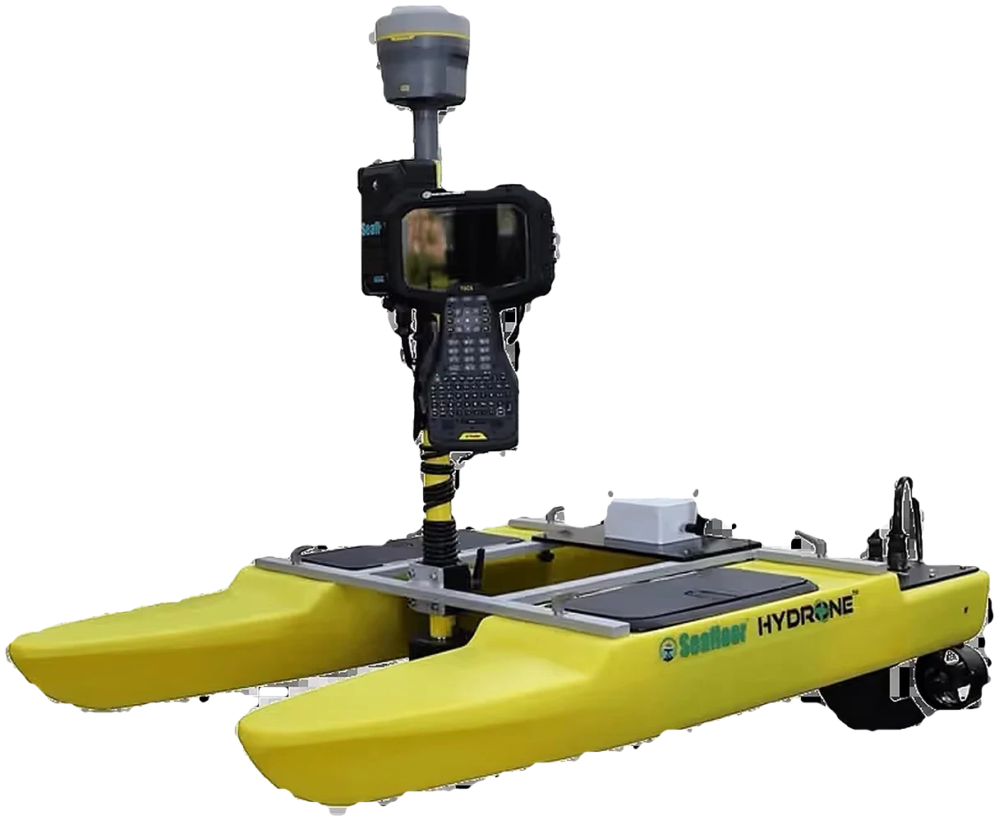
Seafloor SystemsHydrographic SurveyAutodesk & CarlsonCAD & Field SoftwareDatamineMine Geology Software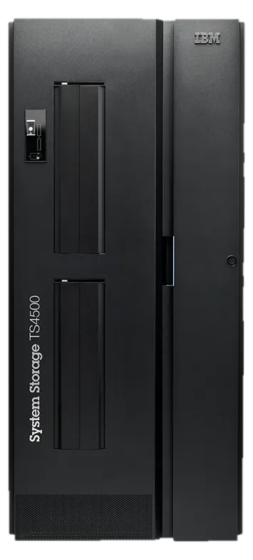
IBM Tape StorageEnterprise Data Archive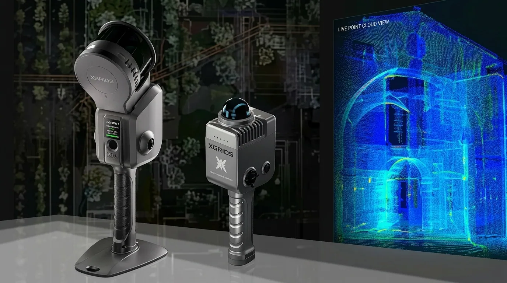
XGRIDSHandheld SLAM LiDARSee how a live 3D model built on ArcGIS helps run one of the busiest ports in Vietnam.
Learn moreOfficial videos from Esri.
Where organizations put ArcGIS to work.
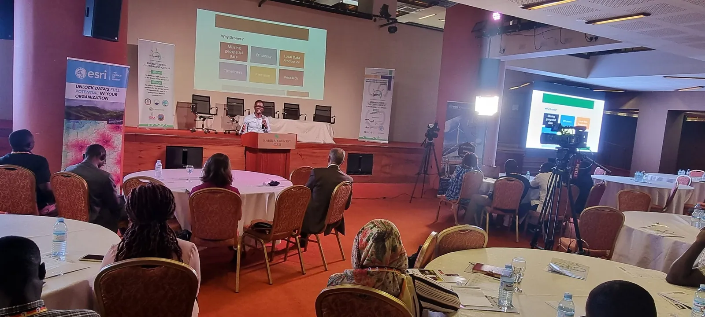
Planning, land administration and public services run on trusted location data.
Learn more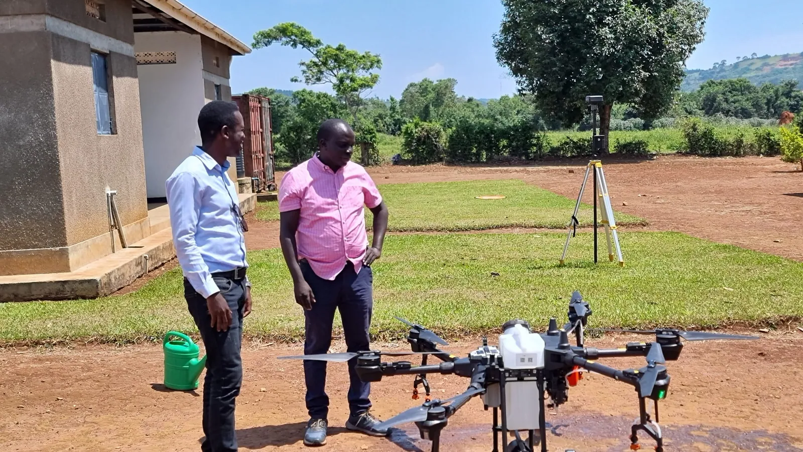
Model, trace and maintain power, water and telecom networks.
Learn more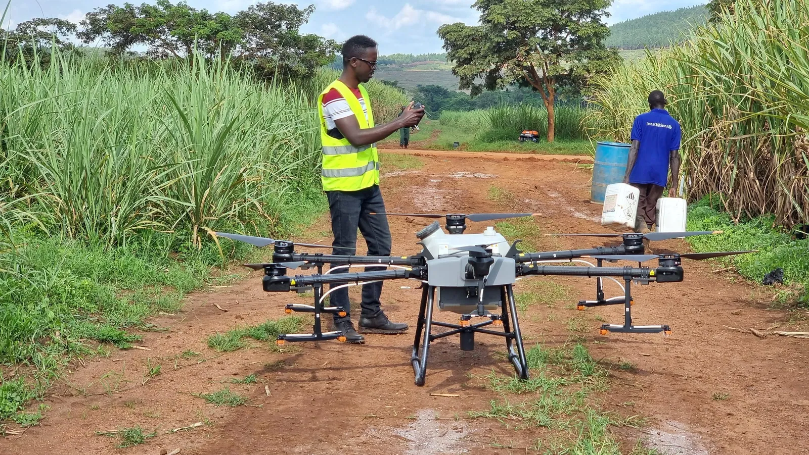
Monitor land, crops and resources from field to portfolio.
Learn more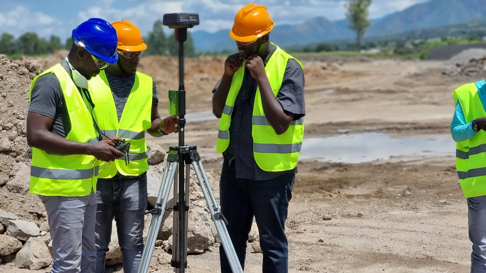
Connect design, survey and operations in one geographic view.
Learn moreLicensed, deployed and supported locally by KACO Systems.
Desktop, web and self-hosted GIS
The world's leading desktop GIS
Complete SaaS mapping platform
Your self-hosted GIS system
Collect and manage data in the field
Mobile field data collection
Smart form builder
Dashboards, networks and drone mapping
Operational and strategic dashboards
Models complex utility networks
Drone photogrammetry in GIS
Courses and learning paths for every level, from first map to advanced analysis.
Learn moreSee how organizations in every sector use ArcGIS.
Learn more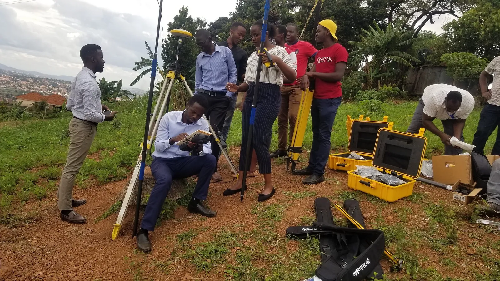
Structured ArcGIS Pro, Enterprise and Field Maps courses delivered in Kampala.
Learn morePortal design, geodatabases and migration planned and supported by our team.
Learn moreAs an Esri Silver Partner, we don’t just sell licenses — we architect, deploy, and support your GIS investment for the long term.
Centralized corporate GIS portals with role-based security, spatial geodatabase design, and migration from legacy desktop GIS.
Configure Field Maps and Survey123 for asset inspection, humanitarian needs assessments, and mobile workforce dispatch across disconnected sites.
Structured ArcGIS Pro, Enterprise, and Field Maps courses delivered by certified KACO GIS trainers.
Our GIS architects help you scope the right ArcGIS licensing tier and deployment model for your organisation’s scale and budget.